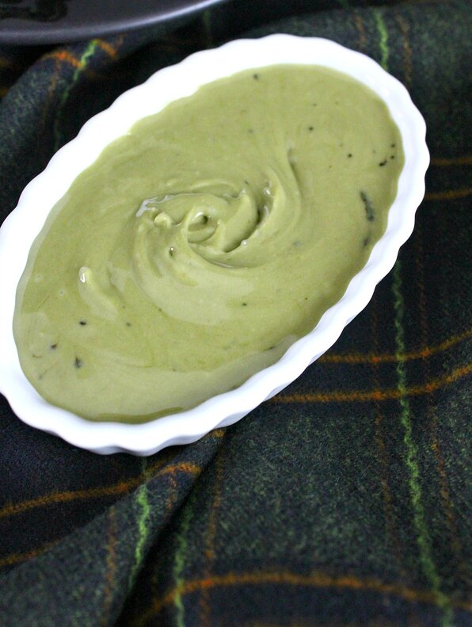

Vegan Matcha Icing

Description
Green tea and matcha lovers will swoon over this 3-ingredient vegan icing, perfect for decorating vegan cookies.
Ingredients
- 1 cup confectioners' sugar
- 1 teaspoon matcha (green tea powder)
- 3 tablespoons almond milk
Steps
- Combine confectioners' sugar and matcha powder in a bowl.
- Add almond milk, 1 tablespoon at a time; mix well until smooth.